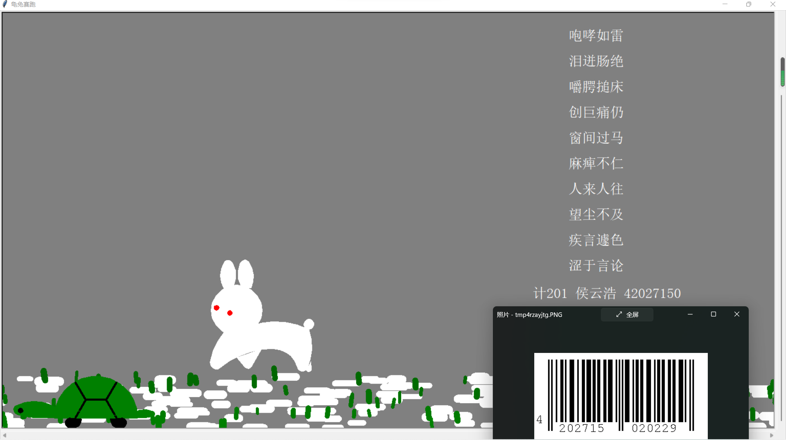
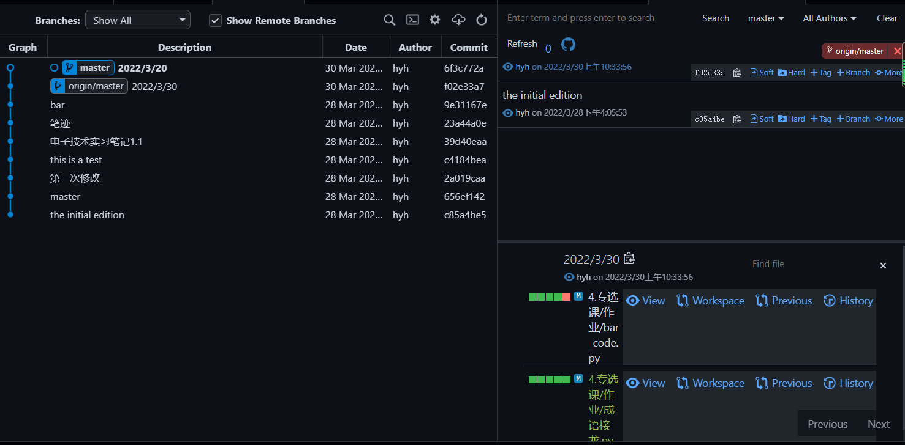

学院：计通学院 专业：计科 班级：计201
姓名：侯云浩 学号：42027150 实验日期： 2022 年 4 月 2 日
[toc]
##2022/3/22 今天第一次打开作业,看到文档中的带音调的成语拼音，毫无头绪可言。
##2022/3/25 突发奇想：既然现在难到我的就是如何在有音调的情况下查到对应的拼音，那为什么不换个思路？改为不使用音调，而是直接用拼音进行匹配。 之后经过查阅资料，我在CSDN上查到关于拼音库pypinyin的使用。 方法如下：
import pypinyin as py #导入相应的库
list = py.lazy_pinyin("侯云浩") #将字符"侯云浩"转换为拼音并存储在列表中
print(list[0]) #输出"hou"
接下来，就是处理文本----将所给文本中的所有成语都提取出来，然后存储到一个大列表中等待使用。
def getlist(filename):#文本处理函数
chengyu = []
file = open(filename+".txt",'rt',encoding="utf-8")
for line in file:
list = line.split()
chengyu.append(list[0])
file.close()
return chengyu
##2022/3/26 完成实现接龙的主要函数。
#随机获取成语列表中以指定字符开始的成语
def get_chengyu(list,startchengyu):
end = startchengyu[-1:] #获取输入成语的最后一个字
end_py = py.lazy_pinyin(end) #转换为拼音
start_chengyu = [w for w in list if (py.lazy_pinyin(w[:1]) == end_py and not(w.startswith(end)) ) ] #匹配获得所有开头符合要求的成语
if(start_chengyu):
target_chengyu = start_chengyu[random.randint(0,len(start_chengyu)-1)]
return target_chengyu
else:
return false
##2022/3/27 在原有作业的要求上加了一点自己的想法——实现了能够根据用户需求进行指定成语的接龙或者进行指定次数的接龙。
#进行指定次数的成语接龙
def jielong(n,start_chengyu):
ed_chengyu = []
for i in range(int(n)):
if(get_chengyu(chengyulist,start_chengyu) and get_chengyu(chengyulist,start_chengyu) not in ed_chengyu):
#判断是否出现过或者无法匹配
pre_chengyu = start_chengyu
start_chengyu = get_chengyu(chengyulist,start_chengyu)
ed_chengyu.append(start_chengyu)
result.append(start_chengyu)
else:
jielong(int(n)-i,pre_chengyu)
break
##2022/3/29 开始写turtle画条形码的部分，遇到困难——画出来的条形码不能够扫描得到其中的信息(无用的条形码)。
##2022/3/30 按照老师上课讲的ppt对画条形码部分进行的改进，结果是虽然可以扫描到条形码了，但是扫描结果为“该条形码无效”。
##2022/4/2 终于解决了条形码的问题，到这里作业也接近尾声了。庆祝！
#结果展示 
#源代码(最终版本)
# -*- coding:utf-8 -*-
'''
@File : 成语接龙.py
@Time : 2022/03/26 19:49:07
@Author : hyh
@Version : 1.0
@Contact : 1360895771@qq.com
@Desc : 专选课作业：成语接龙
'''
# here put the import lib
import pypinyin as py
import random
from sympy import false, true
import Tortoise_and_rabbit_race
from turtle import*
#处理文本：读取文本数据，并存储在列表中
def getlist(filename):
chengyu = []
file = open(filename+".txt",'rt',encoding="utf-8")
for line in file:
list = line.split()
chengyu.append(list[0])
file.close()
return chengyu
#随机获取成语列表中以指定字符开始的成语
def get_chengyu(list,startchengyu):
end = startchengyu[-1:] #获取输入成语的最后一个字
end_py = py.lazy_pinyin(end) #转换为拼音
start_chengyu = [w for w in list if (py.lazy_pinyin(w[:1]) == end_py and not(w.startswith(end)) ) ] #匹配获得所有开头符合要求的成语
if(start_chengyu):
target_chengyu = start_chengyu[random.randint(0,len(start_chengyu)-1)]
return target_chengyu
else:
return false
#进行指定次数的成语接龙
def jielong(n,start_chengyu):
ed_chengyu = []
for i in range(int(n)):
if(get_chengyu(chengyulist,start_chengyu) and get_chengyu(chengyulist,start_chengyu) not in ed_chengyu):
#判断是否出现过或者无法匹配
pre_chengyu = start_chengyu
start_chengyu = get_chengyu(chengyulist,start_chengyu)
ed_chengyu.append(start_chengyu)
result.append(start_chengyu)
else:
jielong(int(n)-i,pre_chengyu)
break
#绘制学号条形码
def draw_bar_code(stu_number):
num = str(stu_number)
print(num)
penup()
X, Y= 360, -320
w, h= 3, 50
for n in num:
fillcolor("black" if n == "1" else "white")
begin_fill()
goto(X,Y)
goto(X+w,Y)
goto(X+w,Y+h)
goto(X,Y+h)
goto(X,Y)
end_fill()
X += w
goto(350,-330)
write(num,move = True, align="left", font=('微软雅黑',5,'bold'))
#转换为01序列
code_table={
"left":{
0:'0001101',
1:'0011001',
2:'0010011',
3:'0111101',
4:'0100011',
5:'0110001',
6:'0101111',
7:'0111011',
8:'0110111',
9:'0001011'
},
"right":{
0:'1110010',
1:'1100110',
2:'1101100',
3:'1000010',
4:'1011100',
5:'1001110',
6:'1010000',
7:'1000100',
8:'1001000',
9:'1110100'
}
}
def make_code(number):
START_END = "01010"
MID = "101"
output = START_END
for i in number[:6]:
output += code_table["left"][i]
output +=MID
for i in number[6:]:
output += code_table['right'][i]
output += START_END
return output
if __name__ == '__main__':
#处理文本，获取成语列表
File="7.公选课\作业\成语接龙"
chengyulist = getlist(File)
#测试用
#file = open("成语.txt","wt",encoding="utf-8")
#for chengyu in chengyulist:
# file.write(chengyu)
#file.close()
#获取接龙的开始成语
#start_chengyu = input("请输入进行接龙的第一个词语:")
start_chengyu = "龟兔赛跑"
#根据用户需求进行一定次数的成语接龙
#n = input("请输入接龙次数:")
n = 10
#print(get_chengyu(chengyulist,start_chengyu))
result=[]
jielong(n,start_chengyu)#调用递归函数jielong实现指定次数的接龙
#绘图部分（调用了上次作业的模块）
Tortoise_and_rabbit_race.draw()
penup()
#绘制接龙成语及个人信息
for j in range(10):
goto(350,200-50*j)
write(result[j]+"\n\n",move = True, align="left", font=('宋体',20,'normal'))
goto(280,-250)
write("计201 侯云浩 42027150",move = True, align="left", font=('宋体',20,'normal'))
#绘制条形码
ori_number=[4,2,0,2,7,1,5,0]
code_number = make_code(ori_number)
draw_bar_code(code_number)
exitonclick()
#git管理过程展示 
说明：由于通过使用git对代码进行管理是近期刚学到的内容，所以3/28日之前的记录并没有保存。